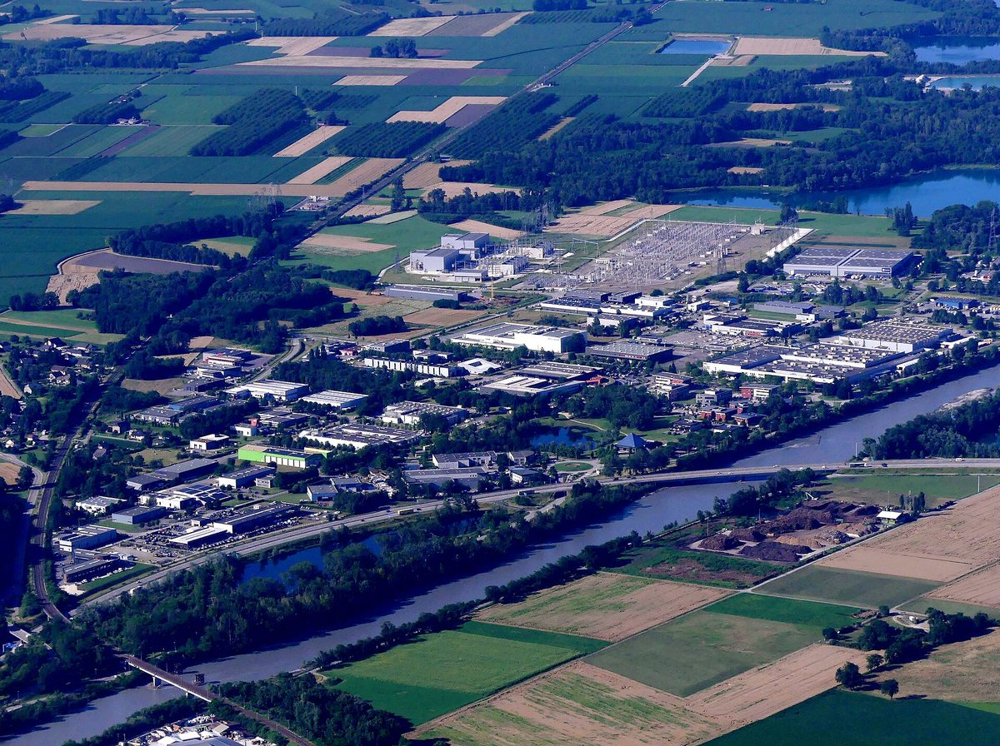

프랑스 사부아 지자체·협동조합 8곳이 함께 지은 알프쾨르 에네르지 5MWc 태양광 준공…산업단지 놀던 땅 5ha에서 연 6.5GWh

코뮌 연합체 쾨르 드 사부아 주도로 5년 준비, 전력 협동조합·혼합경제회사·마을 발전소 협동체 참여…전기는 단지 기업과 직접 계약해 지역에서 쓰고 에네르지 파르타제 인증도 받아
프랑스 사부아 지방의 지자체와 에너지 협동조합 등 8곳이 함께 만든 태양광 발전소 알프쾨르 에네르지(Alp'Cœur Énergie)가 10월 15일 준공식을 열었다. 코뮌 연합체 쾨르 드 사부아(Cœur de Savoie)가 처음 제안해 5년 동안 준비한 사업으로, 포르트드사부아·생텔렌뒤락 두 코뮌과 에네르지제르(Energ'Isère), 전력 협동조합 에네르쿠프 오베르뉴론알프(Enercoop AURA), 혼합경제회사 사부아 EnR(SEM Savoie EnR), 시앙EnR(Syan'EnR), 마을 발전소 협동체 르 솔라레(Le Solaret)가 참여했고 지역 기업들도 힘을 보탰다. 발전소는 면적 150ha에 기업 190곳, 직원 약 3,000명이 모인 알프스파스(Alpespace) 산업단지에서 농업에 한 번도 쓰이지 않은 채 놀던 땅 5ha에 들어섰으며, 주변 생물다양성을 지키는 방안도 함께 검토했다. 설비 용량은 5MWc, 연간 생산량은 인구 3,000명 도시의 소비량에 해당하는 약 6.5GWh로, 전기를 많이 쓰는 단지 기업들에 생산자와 소비자가 직접 맺은 계약으로 공급되며 4월 30일부터 상업 운전 중이다. 두 사부아(사부아·오트사부아) 지역에서 가장 큰 태양광 발전소로 소개된 이 발전소는 지역 이익·지역 활력·시민 금융·공동 운영·생물다양성 5개 기준을 따지는 에네르지 파르타제(Énergie Partagée) 인증을 받았다. 뱅상 자크르세뇌르 에네르쿠프 오베르뉴론알프 이사장은 "협력이 에너지 과제를 푸는 열쇠"라고 말했고, 베아트리스 상테 쾨르 드 사부아 의장은 5년의 작업 끝에 나온 이 지역 사업이 이제 본보기가 돼야 한다고 강조했다.
시민에너지 관점
지자체 연합이 땅과 사업을 열고 코뮌·공기업·전력 협동조합·마을 발전소 협동체가 한 발전소에 함께 들어간 알프쾨르 에네르지는, 5MWc 규모의 산업단지 태양광도 여러 공공·시민 주체가 역할을 나눠 맡을 수 있다는 것을 보여 준다. 참여 주체가 많으면 결정이 늦어진다는 우려가 있고 실제로 준비에 5년이 걸렸지만, 그 시간은 지자체와 공기업, 협동조합이 처음부터 함께 결정하는 구조를 세우는 데 쓰였다. 이 사업의 시민 출자 규모는 알려지지 않았으나, 발전소가 받은 인증의 5개 기준인 지역 이익·지역 활력·시민 금융·공동 운영·생물다양성은 누가 짓느냐보다 누가 주인이고 이익이 어디에 남느냐를 묻는 점검표로 쓸 만하다. 국내 산업단지 태양광도 놀고 있는 공공 부지부터 지자체·공기업·협동조합·주민이 함께 소유하는 구조로 설계하고, 이런 기준을 인허가와 지원의 조건으로 삼아야 한다.
출처: La Vie Nouvelle 2026-10-28 Aurélie Lucas 원문 보기
フランス・サヴォワの自治体と協同組合など8団体が共同で建設したアルプクール・エネルジー5MWc太陽光が完成…産業団地の遊休地5haで年6.5GWh
コミューン連合体クール・ド・サヴォワ主導で5年かけて準備、電力協同組合・混合経済会社・村の発電所協同体が参加…電気は団地企業と直接契約して地域で消費、エネルジー・パルタジェ認証も取得
フランス・サヴォワ地方の自治体やエネルギー協同組合など8団体が共同で建設した太陽光発電所「アルプクール・エネルジー（Alp'Cœur Énergie）」の完成式が10月15日に開かれた。コミューン連合体クール・ド・サヴォワ（Cœur de Savoie）が最初に提案し、5年をかけて準備した事業で、ポルト・ド・サヴォワとサンテレーヌ・デュ・ラックの2コミューン、エネルジゼール（Energ'Isère）、電力協同組合エネルクープ・オーヴェルニュ・ローヌ・アルプ（Enercoop AURA）、混合経済会社サヴォワEnR（SEM Savoie EnR）、シアンEnR（Syan'EnR）、村の発電所協同体ル・ソラレ（Le Solaret）が参加し、地元企業も支援した。発電所は面積150ha、企業190社、従業員約3,000人が集まるアルプスパス（Alpespace）産業団地のうち、一度も農業に使われたことのない遊休地5haに建設され、周辺の生物多様性を守る方策もあわせて検討された。設備容量は5MWc、年間発電量は人口3,000人の都市の消費量に相当する約6.5GWhで、電力を多く使う団地内の企業に生産者と消費者が直接結んだ契約で供給され、4月30日から商業運転している。二つのサヴォワ（サヴォワ県・オート・サヴォワ県）で最大の太陽光発電所と紹介されたこの発電所は、地域の利益・地域の活力・市民金融・共同運営・生物多様性の5基準を審査する「エネルジー・パルタジェ（Énergie Partagée）」認証を受けた。エネルクープ・オーヴェルニュ・ローヌ・アルプのヴァンサン・ジャック＝ル＝セニュール理事長は「協力がエネルギーの課題を解く鍵だ」と述べ、クール・ド・サヴォワのベアトリス・サンテ議長は、5年の取り組みの末に生まれたこの地域事業がこれからの手本になるべきだと強調した。
市民エネルギーの視点
自治体連合が土地と事業の道を開き、コミューン・公企業・電力協同組合・村の発電所協同体が一つの発電所に共に参加したアルプクール・エネルジーは、5MWc規模の産業団地太陽光でも複数の公共・市民の担い手が役割を分け合えることを示している。参加主体が多いと意思決定が遅れるとの懸念があり、実際に準備に5年かかったが、その時間は自治体と公企業、協同組合が最初から共に決める仕組みを築くために使われた。この事業の市民出資の規模は明らかになっていないが、発電所が受けた認証の5基準である地域の利益・地域の活力・市民金融・共同運営・生物多様性は、誰が建てるかよりも誰が持ち主で利益がどこに残るかを問うチェックリストとして使える。韓国の産業団地太陽光も、遊休の公有地から自治体・公企業・協同組合・住民が共に所有する仕組みで設計し、こうした基準を許認可と支援の条件にすべきだ。
出典: La Vie Nouvelle 2026-10-28 オレリー・リュカ（Aurélie Lucas） 原文を読む
法国萨瓦省地方政府与合作社等8方共建的Alp'Cœur Énergie 5MWc光伏电站落成…利用产业园区5公顷闲置土地年发电6.5GWh
由市镇联合体Cœur de Savoie牵头筹备5年，电力合作社、混合经济公司和村级电站合作体参与…电力通过与园区企业直接签约在本地消纳，并获得Énergie Partagée认证
法国萨瓦地区的地方政府和能源合作社等8方共同建设的光伏电站Alp'Cœur Énergie于10月15日举行落成仪式。该项目由市镇联合体Cœur de Savoie最先提出，历时5年筹备，波尔特-德萨瓦（Porte-de-Savoie）和圣埃莱讷-迪拉克（Sainte-Hélène-du-Lac）两个市镇、Energ'Isère、电力合作社Enercoop AURA、混合经济公司SEM Savoie EnR、Syan'EnR以及村级电站合作体Le Solaret参与其中，当地企业也给予了支持。电站建在面积150公顷、聚集190家企业和约3,000名员工的阿尔卑斯帕斯（Alpespace）产业园区内一块从未用于农业的5公顷闲置土地上，并同时研究了保护周边生物多样性的方案。电站装机容量为5MWc，年发电量约6.5GWh，相当于一座3,000人城市的用电量，通过生产者与消费者直接签订的合同供应给园区内用电量大的企业，自4月30日起商业运行。这座被介绍为上萨瓦和萨瓦两省最大的光伏电站，获得了按地方利益、地方活力、公民金融、共同治理和生物多样性5项标准评审的Énergie Partagée认证。Enercoop AURA理事长樊尚·雅克-勒塞涅尔（Vincent Jacques-Le-Seigneur）表示："合作是应对能源挑战的关键。"Cœur de Savoie主席贝阿特丽斯·桑泰（Béatrice Santais）则强调，经过5年努力诞生的这一地方项目今后应当成为榜样。
市民能源视角
由地方政府联合体打开土地和项目之门，市镇、公营企业、电力合作社和村级电站合作体共同参与同一座电站，Alp'Cœur Énergie表明即便是5MWc规模的产业园区光伏，也可以由多个公共和公民主体分工承担。有人担心参与方多会拖慢决策，这个项目也确实筹备了5年，但这段时间正是用来搭建地方政府、公营企业和合作社从一开始就共同决策的机制。该项目的公民出资规模尚未公开，但电站所获认证的5项标准——地方利益、地方活力、公民金融、共同治理和生物多样性——追问的不是由谁来建，而是谁是主人、收益留在哪里，可以作为一张检查清单。韩国的产业园区光伏也应从闲置公共用地做起，设计成由地方政府、公营企业、合作社和居民共同拥有的结构，并把这类标准作为审批和扶持的条件。
来源: La Vie Nouvelle 2026-10-28 Aurélie Lucas 查看原文
Eight local authorities and co-operatives in Savoie, France, open the 5MWc Alp'Cœur Énergie solar plant on 5 ha of idle business-park land, producing 6.5GWh a year
Led by the Cœur de Savoie community of communes after five years of preparation, with an electricity co-operative, a mixed-economy company and a village power co-operative on board; power is sold locally under direct contracts with park businesses, and the plant carries the Énergie Partagée label
Alp'Cœur Énergie, a solar plant built jointly by eight local authorities, energy co-operatives and other partners in Savoie, France, was inaugurated on 15 October. The project was initiated by the Cœur de Savoie community of communes and took five years to prepare; partners include the communes of Porte-de-Savoie and Sainte-Hélène-du-Lac, Energ'Isère, the electricity co-operative Enercoop AURA, the mixed-economy company SEM Savoie EnR, Syan'EnR and the village power co-operative Le Solaret, with support from local businesses. The plant stands on 5 ha of idle land never used for farming inside the Alpespace business park, which covers 150 ha and is home to 190 companies and about 3,000 employees, and measures to protect the surrounding biodiversity were studied alongside it. With a capacity of 5MWc, it is expected to generate about 6.5GWh a year, equivalent to the consumption of a town of 3,000 people, and supplies the park's power-hungry businesses under contracts signed directly between producer and consumers; it has been in commercial operation since 30 April. Described as the largest solar plant in the two Savoie departments (Savoie and Haute-Savoie), it has received the Énergie Partagée label, which assesses projects on five criteria: local interest, local dynamism, citizen finance, shared governance and biodiversity. Vincent Jacques-Le-Seigneur, president of Enercoop AURA, said "cooperation is a key" to meeting the energy challenge, while Béatrice Santais, president of Cœur de Savoie, stressed that the local initiative, the fruit of five years of work, should now serve as a model.
Citizen Energy View
With a group of municipalities opening up the land and the project, and communes, a public company, an electricity co-operative and a village power co-operative all joining a single plant, Alp'Cœur Énergie shows that even a 5MWc business-park solar project can be shared out among several public and citizen actors. There is a worry that many partners slow decisions down, and preparation here did take five years, but that time went into building a structure in which local authorities, a public company and co-operatives decided together from the start. The size of citizen investment in this project has not been disclosed, yet the five criteria behind its label (local interest, local dynamism, citizen finance, shared governance and biodiversity) make a useful checklist that asks not who builds a plant but who owns it and where the benefits stay. Korea's industrial-park solar should likewise start with idle public land, be designed for joint ownership by local governments, public companies, co-operatives and residents, and make criteria like these a condition for permits and support.
Source: La Vie Nouvelle 2026-10-28 Aurélie Lucas Read the original